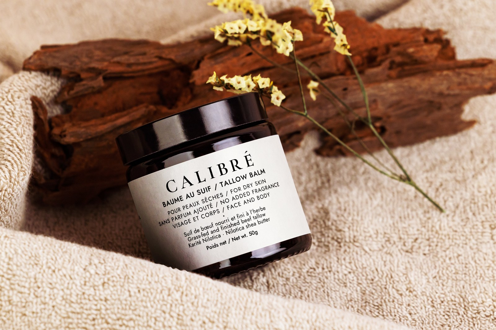
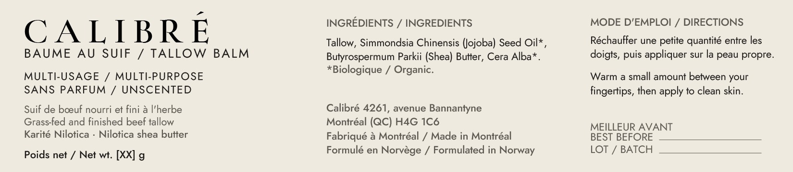
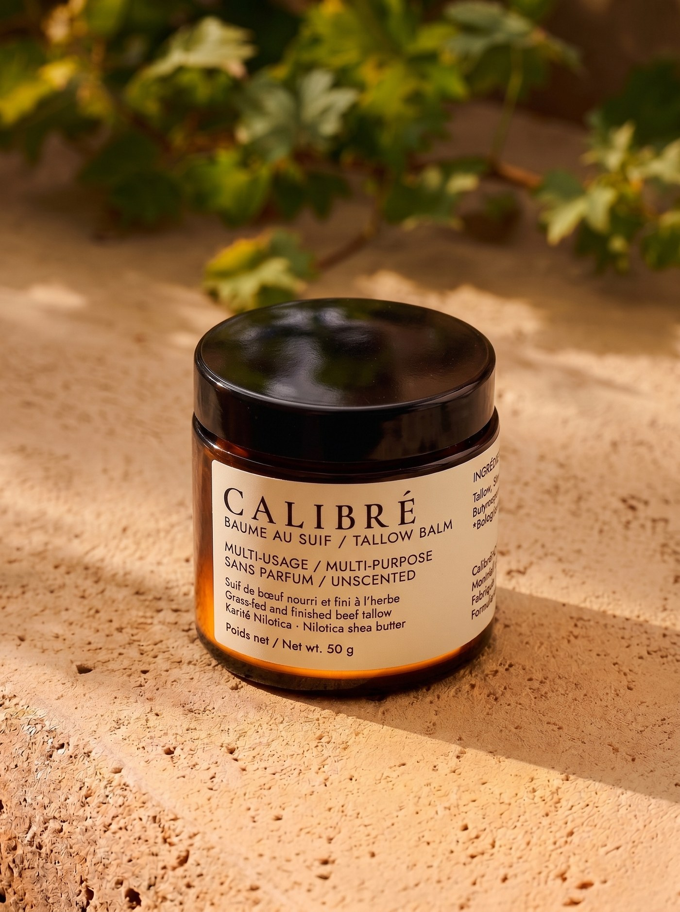
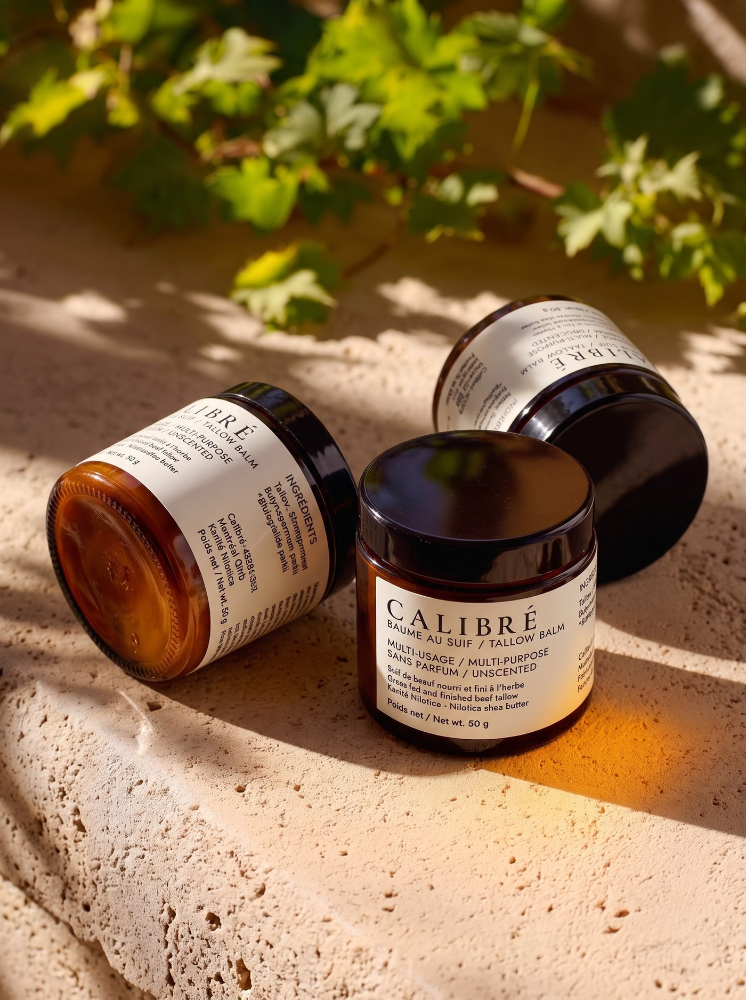
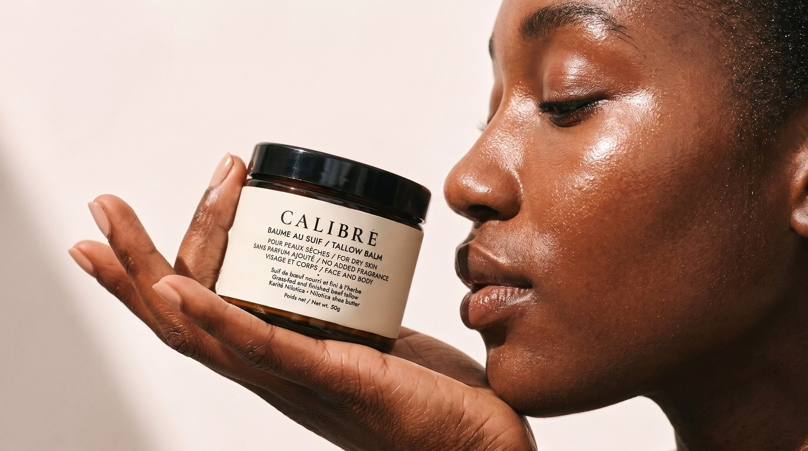
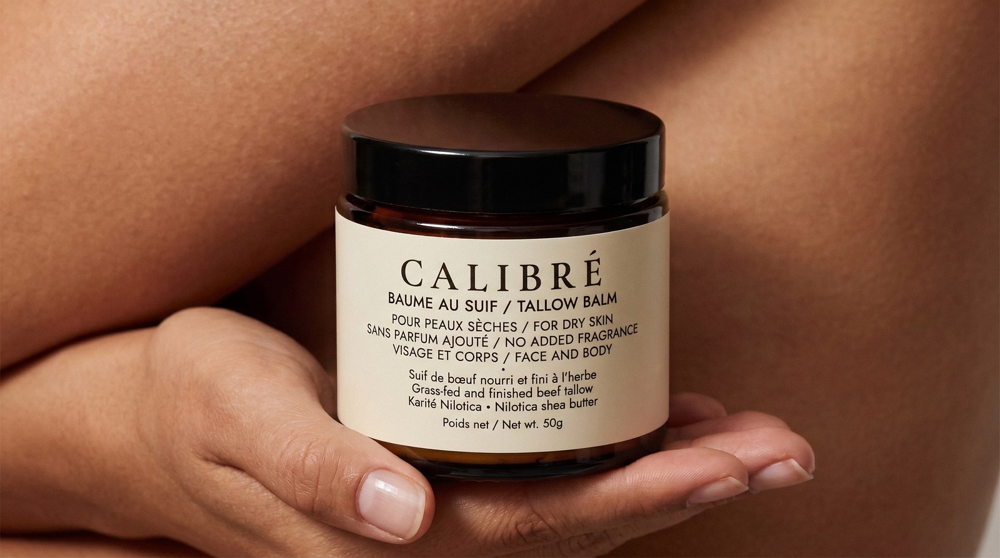
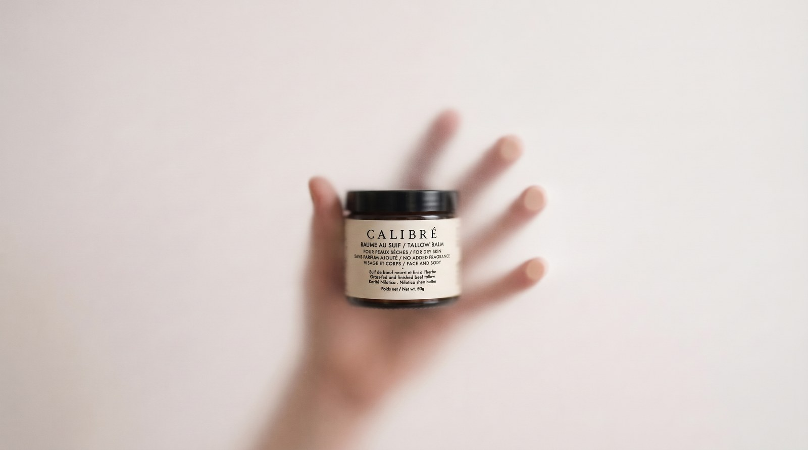
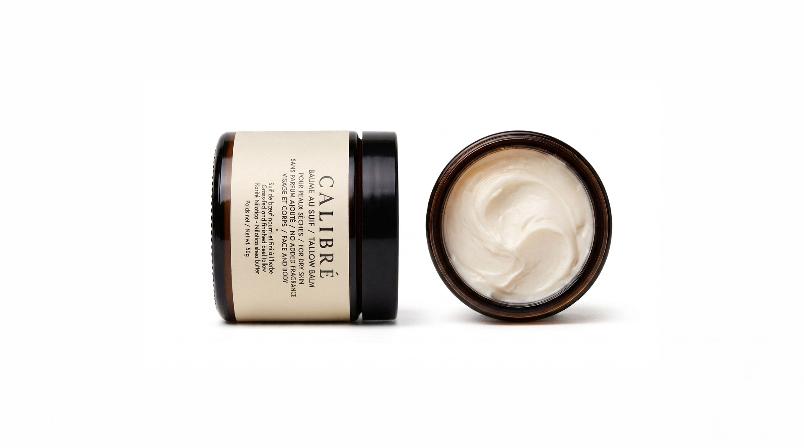

Calibré Tallow Balm
Bilingual skincare label accuracy across amber glass 3D renders, sunlit travertine mockups, beauty portraits, and motion commercials.

[ 01 · Organic Linen Hero ]The Challenge
Bilingual skincare labels are the hardest stress test for AI imagery. Calibré’s Montréal-crafted 50g amber glass jar carries crisp French and English typography—accents, slash dividers, ingredient lists, and weight callouts—wrapped across a glossy cylindrical curve.
Generic generators scrambled French diacritics and turned whipped tallow balm into flat plastic. Calibré needed editorial beauty photography, architectural stone 3D mockups, and sunlit motion creatives where every line of label copy remained legible and compliant.

[ Input · Wraparound Label Dieline ]
[ 02 · Travertine Single ]
[ 03 · Travertine Trio ]01. Amber Glass & Bilingual Fidelity
We calibrated Calibré’s Brand Twin directly from the wraparound label artwork and high-contrast wordmark vectors—capturing the exact acute accent on “CALIBRÉ”, warm cream uncoated label stock, and deep glossy Bakelite-style black lid.
Optical & Texture Realism
- True amber glass refraction casting warm golden caustics onto travertine stone.
- Natural whipped balm swirl peak inside the open jar for texture-focused PDP frames.
- Senior designer pass verifying every French/English line item before ad export.

[ 04 · Beauty Editorial ]
[ 05 · Tactile Scale ]02. Beauty Portraiture & Dual Motion Cuts
Skincare creative fatigues quickly when every ad looks like a sterile packshot. Using Calibré’s single Twin, we branched into clean minimal silhouette shots, editorial dewy skin portraits, textured organic linen scenes, and two distinct motion commercials.
Designed for Paid Social Testing
- Hook Variation A (Texture): Sunlit stone setting with open-jar cream swirl and dual-jar finale.
- Hook Variation B (Application): Model applying balm onto sunlit skin beside open jars for TikTok retention.
- Minimalist Statics: Shallow-DOF hand-framed silhouette and driftwood linen composition for retargeting.

[ 06 · Optical Focus ]
[ 07 · Clean Packshot ]03. Built for Weekly Creative Testing
Armed with one verified Twin, Calibré gained an entire library of beauty portraits, 3D mockups, and modular motion cuts ready for continuous Meta and TikTok creative rotation.
Distinct commercial hooks delivered
Editorial, 3D mockup & PDP frames
100% bilingual accent accuracy
From label file to live campaign
“Every French accent, weight line, and amber glass reflection held up across beauty portraits and sunlit motion—something we never got from self-serve AI.”